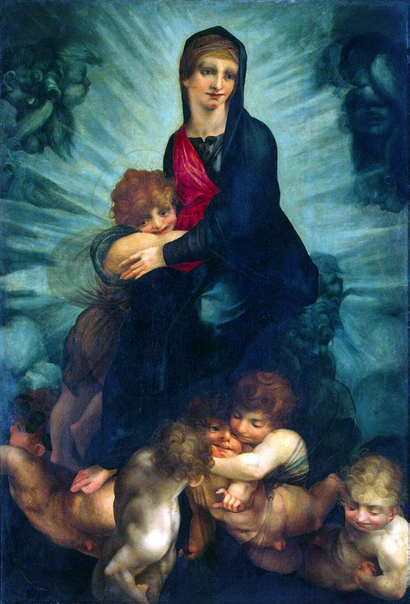
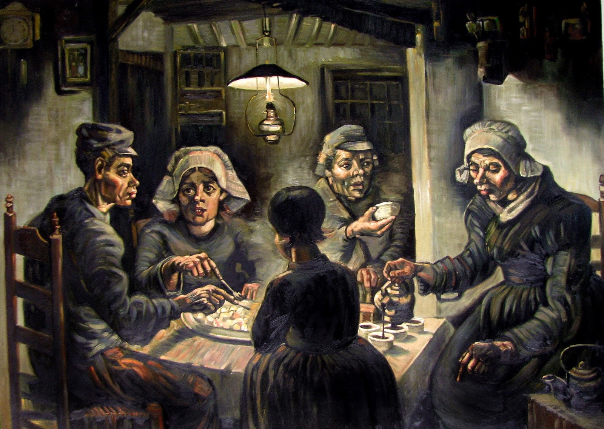
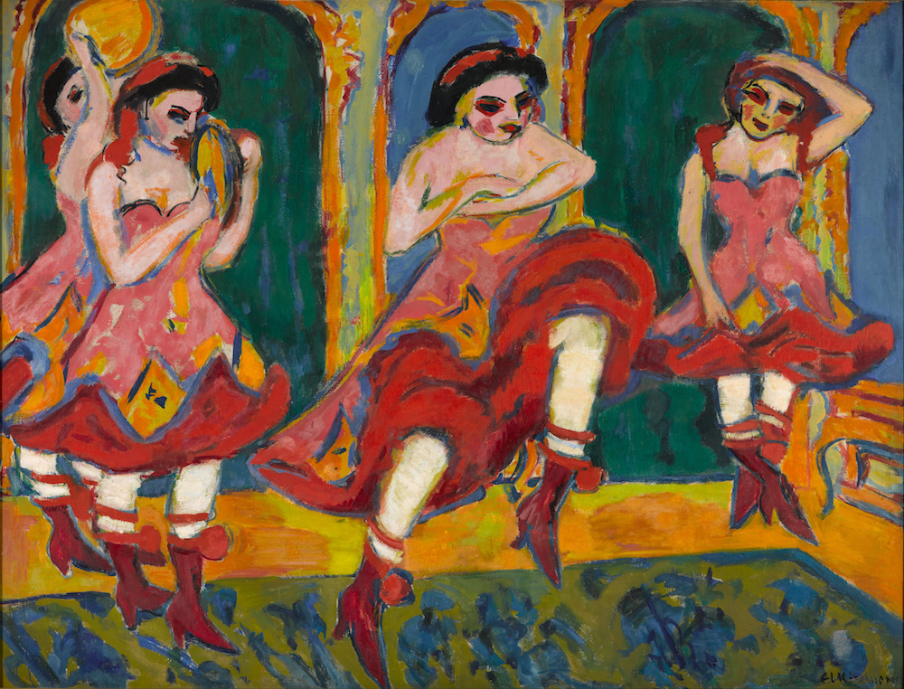

'Cruddy Canvas' Podcast
Created for my college's sound editing unit.
Cruddy Canvas – Episode 1
Download EpisodeOne of the assignment's from my college's sound editing unit was to create a podcast episode. I chose to make one about critiquing historical art. This podcast episode features a sponsor for a fictional grocery store.
Art Podcast Transcript
Note: All background music is downloaded from Pixabay.
Intro
Opening (0:00 – 0:27)
Audio Logo: (Boogie Woogie Logo)
(BGM: Catch It)
Justin: There’s no such thing as bad art until you find it. This is Cruddy Canvas, where I, Crabby J, criticize artists better than me.
Now art really is a gift from the heavens; as such many artists across history have chosen to thank said heavens by depicting its figureheads with pencil and paint. Sometimes these turn out less like a tribute to our father and more like something our dad puts on the fridge. Case in point:
Sound Effect: Call to Attention
Justin: Rosso Fiorentino’s Madonna with Child and Putti, from 1522.
Rosso Fiorentino, Madonna with Child and Putti, 1522
Description (0:28 – 0:53)
We got a Renaissance piece here, and that means realistic proportions and detailing with somewhat stylized lighting. This depicts Mary and her child, Jesus, standing atop some childlike angels. In the background is a light shining through the cloudy blue sky, highlighting Mary and her kid. In the foreground are some angel children.
Negatives (0:54 – 1:37)
One of which is being stepped on, seemingly because of how cramped this whole piece is. This doesn’t feel like a comfortable gathering, the cherubs are just haphazardly, tightly, scattered at Mary’s feet. Not helping matters is the awkward half-smile everyone’s wearing on their faces. Mary’s face in particular is oddly flat. The cherubs in the foreground are oddly buff, and Jesus’ head is tiny—though not as tiny as his barely visible halo. The clouds have better definition than anything in front of them; Fiorentino’s priorities with the blending were skewed. The lighting itself is odd. It's positioned behind them, but the way everything’s shaded indicates the lighting is in front.
Positives (1:38 – 1:53)
Despite both the sky and Mary’s robe being blue, they contrast enough to allow Mary to act as a focal point. Despite the odd blending, the folds in Mary’s clothing and her sitting pose are still readable.
Conclusion (1:54 – 2:01)
From the spacing to the look on everyone’s faces, this is an uncomfortable piece of art. But it demonstrates the importance of good composition and visual clarity.
Vincent van Gogh, The Potato Eaters, 1885
Description (2:02 – 2:28)
An oil on canvas piece showing a small, cramped dining room illuminated by a lamp. Four people sit at the table, with a child standing in the foreground. The color scheme consists of browns and greys, with slight blue and red accents.
Negatives (2:29 – 3:02)
The perspective is flawed—it's unclear if the table is foreshortened. The child appears to be glowing under the lamp, and the woman on the right has a disproportionate neck and misplaced shoulders.
Positives (3:03 – 3:47)
The stylization is deliberate. Van Gogh intended to depict homely figures to reflect their bleak situation (source: VanGoghLetters.org). Despite the table issue, the spatial composition and color scheme support the theme of poverty and hardship.
Conclusion & Commercial (3:48 – 4:16)
The piece is effective despite its flaws. A mock commercial follows: “There’s no better place to buy a potato than Gary’s Groceries,” located at 123 Main Street Drive.
Ernst Ludwig Kirchner, Czardas Dancers, 1908
Description (4:17 – 5:03)
This expressionist acrylic painting depicts a small yellow room with four dancers in pink dresses. The floor features a blue-green carpet. Blue windows, mirrors, and turquoise elements populate the background.
Positives (5:04 – 5:07)
The midground elements are visually distinguishable.
Negatives (5:08 – 5:53)
The brushwork appears sloppy. The dancers are stiff, the strokes lack intentionality, and the piece has no depth or scale differentiation. The angle is ambiguous, and the composition lacks a visual hierarchy. Stylization attempts result in unrefined execution.
Conclusion & Ending (5:54 – 6:34)
Kirchner’s later works show improvement in technique and spatial understanding. Listeners are invited to submit feedback via Twitter or Instagram @CruddyCanvas, or by emailing cruddycanvas@email.com.